1. Visão geral
O Radar de Preços compara a lista de compras da casa em cinco lojas online. Ele tem duas partes, que conversam por arquivos:
- O robô (
robo.py) faz a busca: lê a lista, consulta as lojas, calcula o preço por unidade, chama a IA e grava o resultado. - O painel (
painel.py) é o site: mostra as ofertas, permite editar a lista e dispara a busca com progresso ao vivo.
2. Arquitetura

Arquivos e responsabilidades
| Arquivo | O que faz |
|---|---|
robo.py | Orquestra a busca. Imprime marcadores (ETAPA_ML, PAUSA_VERIFICACAO, [1/37]) que o painel lê para mostrar o progresso. |
painel.py | Interface Streamlit: Ofertas, Lista de compras e Buscar preços. |
radar/config.py | Caminhos dos arquivos e leitura do .env (relido a cada uso). |
radar/lojas/ | Um arquivo por loja e o cadastro em __init__.py. |
radar/unidades.py | Lê a quantidade no título e calcula o preço por unidade. |
radar/ia.py | Prompt, chamada ao DeepSeek e novas tentativas. |
radar/banco.py | Grava cada busca e responde às consultas de histórico. |
radar/navegador.py | Detecta e abre o Chrome do robô. |
radar/texto.py | Limpeza de títulos e leitura de preços em texto. |
3. Lojas e coleta
| Loja | Como | Observação |
|---|---|---|
| Americanas, Atacadão, Muffato | API VTEX (intelligent-search/product_search) | JSON, em paralelo; descarta sem estoque e sem preço. |
| Magalu | Chrome do robô (CDP) | Título lido do card; o da URL é marcado como aproximado. |
| Amazon | Chrome do robô (CDP) | Espera o primeiro resultado aparecer (até 15 s). |
| Mercado Livre | Desligado (ML_ATIVO=0) | Captcha no site e API bloqueada (403). Quando ligado, pausa para uma pessoa resolver. |
Por que um Chrome "de verdade"
Magalu e Amazon bloqueiam pedidos feitos por script. O robô se conecta (connect_over_cdp) a um Chrome normal aberto com --remote-debugging-port=9222 e um perfil próprio (C:\ChromePerfilTeste). Para os sites, é uma pessoa navegando. O robô abre esse Chrome sozinho se ele estiver fechado.
Paralelismo
As buscas VTEX são só pedidos HTTP, então são disparadas todas de uma vez num ThreadPoolExecutor, enquanto o Chrome, que faz uma coisa por vez, cuida de Magalu e Amazon. As chamadas à IA também rodam em paralelo: o robô segue para o próximo item enquanto ela responde.
4. Preço por unidade
O radar/unidades.py usa expressões regulares para achar a quantidade no título e converte tudo para a mesma régua dentro de cada item.
| Título | Quantidade | Régua |
|---|---|---|
| Amaciante Comfort 1,5L | 1500 ml | R$/L |
| Protetor Solar Facial FPS50 50ml | 50 ml | R$/100ml (item de frasco pequeno) |
| Creme Dental Colgate 180g 3 un | 540 g | R$/100g |
| Papel Toalha Scala 3x120fls | 360 folhas | R$/100 folhas |
| Papel Higiênico 20m 12 Unidades | 240 m | R$/10m |
| Saco de Lixo 50L 50un | 50 un | R$/un ("50L" é capacidade) |
| Veja 500ml com 10% de desconto | 500 ml | R$/L ("10%" não é quantidade) |
Preços por unidade absurdamente baixos (menos de 1/4 da mediana do item) são escondidos no painel. Quase sempre vêm de título sem vírgula, como "15l" no lugar de "1,5l".
5. A IA
Cada item vai para o DeepSeek (deepseek-chat, response_format=json_object) com as ofertas numeradas e o preço por unidade já calculado. A resposta tem dois campos:
{"recomendacoes": [{"id": 0, "motivo": "Sai a R$ 13,98 o litro, o mais barato entre os Comfort."}],
"fora_do_pedido": [3, 7]}O que conta como "fora do pedido"
- Outro tipo de produto (absorvente na busca de protetor solar).
- Outra marca, quando a marca foi pedida (Nivea na busca de sabonete Dove).
- Outro formato, quando o formato foi pedido (roll-on na busca de desodorante aerossol).
O que não conta
Outra versão ou fragrância (Men, Clinical, Cotton), outro tamanho, kit, refil ou "leve mais pague menos". O prompt também proíbe supor quem vai usar o produto.
Robustez
- Até 3 tentativas por item, com espera crescente (2 s, 4 s, 6 s), se a resposta vier vazia, com id inválido ou fora do formato.
- Um produto escolhido nunca fica marcado como "fora do pedido".
- Para testar mudanças no prompt sem refazer a busca:
python scripts\avaliar_ia.py "item".
6. Histórico (SQLite)
O historico.db é um banco SQLite: um arquivo só, sem servidor, lido com o módulo sqlite3 da biblioteca padrão.
| Tabela | Colunas |
|---|---|
buscas | id, data |
precos | busca_id (chave estrangeira), termo, loja, titulo, preco, link, preco_unidade, unidade, escolhido_ia |
O preço de cada dia é o da escolha da IA, e não o do produto mais barato da busca. Na busca de "barbeador elétrico", o mais barato é um aparelho manual que a IA descartou. O selo do painel compara o preço de hoje com a média dos dias anteriores (até 14 dias).
SELECT substr(b.data, 1, 10) AS dia,
COALESCE(MIN(CASE WHEN p.escolhido_ia = 1 THEN p.preco END), MIN(p.preco)) AS preco
FROM precos p JOIN buscas b ON b.id = p.busca_id
WHERE p.termo = ? GROUP BY dia ORDER BY dia;7. O painel
- Ofertas: etiqueta da melhor escolha, lista de ofertas com preço por unidade e variação desde a última busca, resultados fora do pedido recolhidos e gráfico do histórico.
- Lista de compras: o item é salvo ao apertar Enter ou tocar fora do campo (callback
on_change). Itens repetidos são ignorados, e tirar um item tem "Desfazer". - Buscar preços: um botão. O painel abre o Chrome do robô se precisar e mostra cada item mudando de "Na fila" para "✓ 21 ofertas".
Senha só para quem vem da internet
O painel lê o cabeçalho Host de cada acesso. localhost e a rede de casa entram direto. O endereço do túnel (….trycloudflare.com) pede a PAINEL_SENHA, comparada com hmac.compare_digest.
8. Operação no dia a dia
| Para | Faça |
|---|---|
| Abrir o painel no PC | scripts\windows\abrir_painel.bat e acesse http://localhost:8501 |
| Mandar um link para a família | scripts\windows\abrir_para_mae.bat e envie o endereço trycloudflare.com que aparecer |
| Agendar a busca diária | powershell -ExecutionPolicy Bypass -File scripts\windows\agendar_busca.ps1 -Hora 11:00 |
| Rodar a busca agendada agora | Start-ScheduledTask -TaskName "Radar de Precos" |
| Ver o que a busca automática fez | Abra busca_automatica.log |
9. Manutenção
Adicionar uma loja VTEX
- Coloque a loja em
CANDIDATASnoscripts/testar_lojas_novas.pye rode o script. - Se ela trouxer produtos com preço, acrescente uma linha em
LOJAS_VTEX(radar/lojas/__init__.py). - Escolha uma cor para ela em
COR_LOJAnopainel.py.
Ajustar a IA
As instruções ficam em INSTRUCOES_SISTEMA e MODELO_PROMPT, no radar/ia.py. Depois de mudar, rode scripts\avaliar_ia.py nos itens problemáticos e compare o antes e o depois.
Testes
python -m pip install -r requirements-dev.txt
python -m pytestCada erro encontrado com dados reais vira um teste (ex.: "Veja 500ml com 10% de desconto" tem que dar 500 ml).
10. Problemas comuns
| Sintoma | Causa provável | Solução |
|---|---|---|
| Magalu e Amazon com 0 ofertas | Chrome do robô não abriu | Abra o painel e use Buscar preços (ele abre o Chrome), ou confira o caminho do Chrome em radar/navegador.py. |
| Item sem recomendação da IA | Chave ausente ou IA fora do ar | Confira DEEPSEEK_API_KEY no .env e o busca_automatica.log. |
| Painel pede senha no PC | Acesso pelo link do túnel | No PC, use http://localhost:8501. |
| Link da família parou | Janela do túnel fechada ou PC dormindo | Abra o abrir_para_mae.bat de novo e mande o link novo. |
| Painel mostra versão antiga | Painel antigo ainda na porta 8501 | Os atalhos .bat fecham o antigo sozinhos. Abra um deles. |
| Busca agendada não roda | Tarefa aponta para o caminho antigo | Rode o agendar_busca.ps1 de novo (ele atualiza a tarefa). |
11. Segurança
- Segredos só no
.env, fora do Git. Oenv.exemplolista as variáveis sem valores. - Lista, preços, histórico, registros e token do ML também ficam fora do Git (
.gitignore). - Senha para acesso externo, e link do túnel temporário.
- O robô não contorna captcha nem proteção de site: quando uma loja pede verificação, ele espera uma pessoa.
12. Histórico de decisões
| Decisão | Por quê |
|---|---|
| Google Shopping descartado | Captcha de "tráfego incomum" mesmo com stealth e perfil persistente. |
| API VTEX em vez de HTML | JSON estável e com estoque. O endpoint clássico dava 400 com termos genéricos. |
| 14 lojas testadas antes de cadastrar | Muffato 9/9 com preço (entrou). Carrefour e Drogasil 503, Nissei 404, Beleza na Web 403. Drogaria São Paulo e Pacheco têm o mesmo catálogo. |
| Mercado Livre desligado | Captcha a cada busca no site, e a API deu 403 PA_UNAUTHORIZED_RESULT_FROM_POLICIES nas duas rotas de busca (04/11/2026), mesmo com login. |
| IA escolhe por id | Comparar nomes ligava a recomendação ao link errado. |
| Prompt com regras e exemplos | A versão curta escondia Rexona Men e Clinical. Reavaliado: de 9 escondidos para 0. |
| Retry com backoff na IA | 4 respostas inválidas em 3 itens numa busca de 37. Todos recuperados. |
| Título da Magalu pelo card | A URL perde a vírgula: "Omo 1,4kg" virou "14kg", e a IA escolheu esse produto. |
| Histórico pela escolha da IA | Comparar o mais barato deu "↑ 1114%" no barbeador elétrico. |
| Régua por item (mediana) | "R$ 539,80/L" no protetor solar, e mistura de R$/100g com R$/L. |
| Lista salva por callback | Item digitado no celular "sumia": o formulário só salvava no botão. |
| Senha pelo cabeçalho Host | Senha para a família, sem atrapalhar quem usa no PC. |
O registro completo, com todas as lojas testadas, está em docs/BACKLOG.md.
13. Reconstruir do zero
git clone https://github.com/new-emi/Radar-de-Precos.git
cd Radar-de-Precos
python -m venv .venv
.\.venv\Scripts\Activate.ps1
python -m pip install -r requirements.txt
copy env.exemplo .env # preencher DEEPSEEK_API_KEY
streamlit run painel.py # abre com os dados de exemplo
python robo.py # primeira busca de verdade
powershell -ExecutionPolicy Bypass -File scripts\windows\agendar_busca.ps1Na primeira busca, o robô cria o historico.db sozinho. Para Magalu e Amazon, o Google Chrome precisa estar instalado.